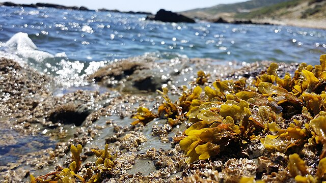
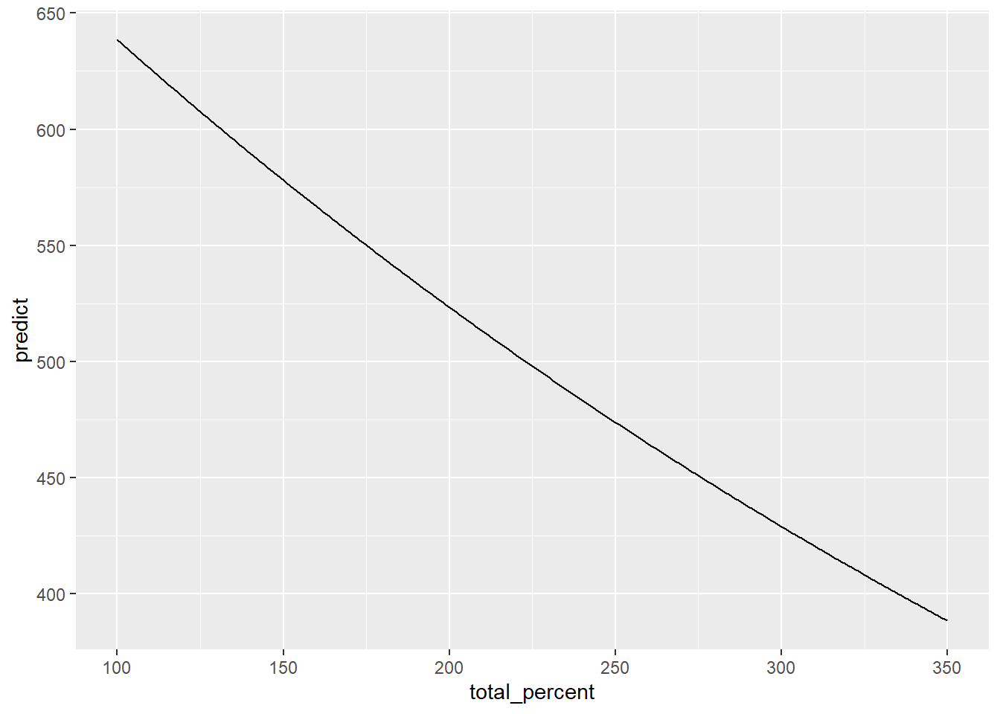
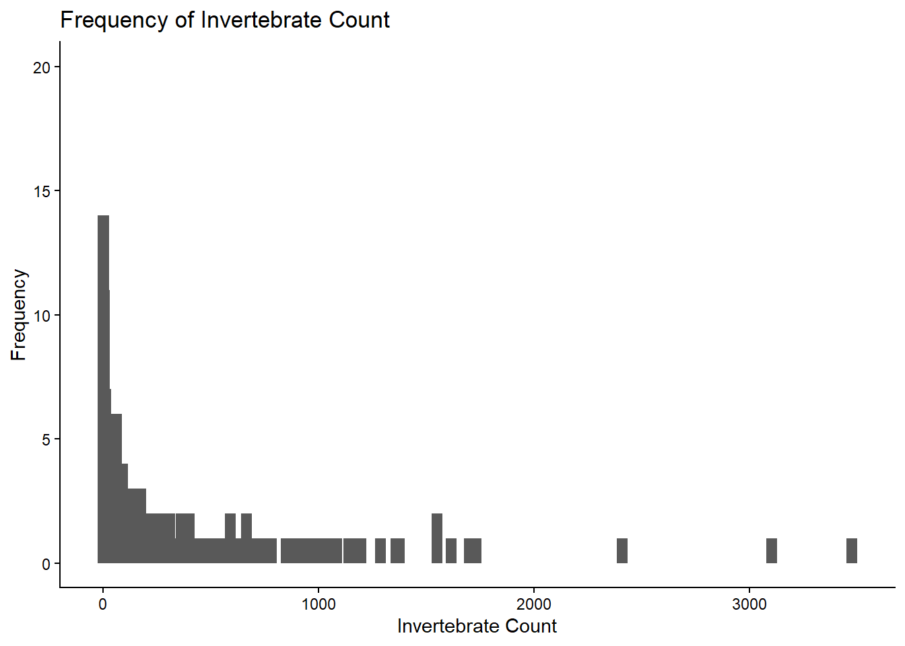
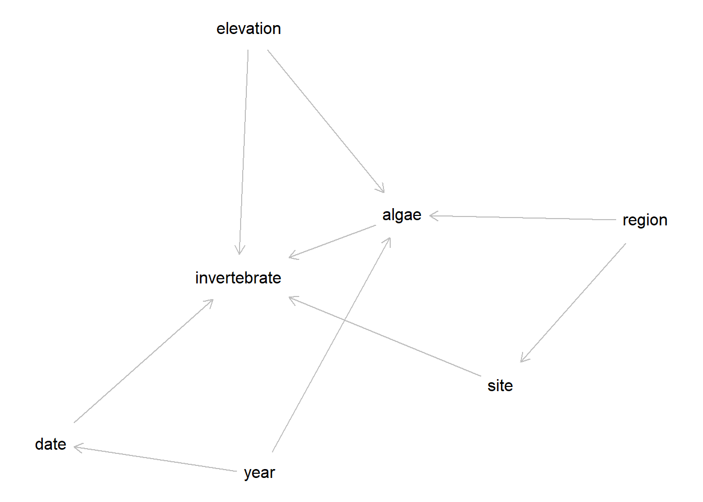
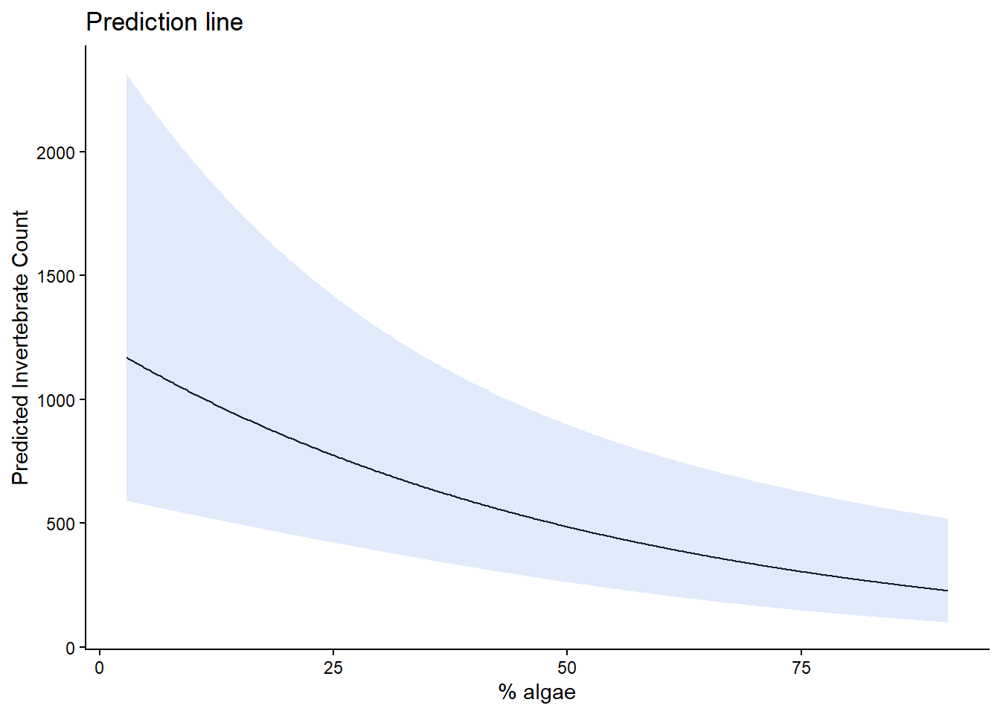

Code
# load packages
library(tidyverse)
library(here)
library(stringr)
library(MASS)
library(kableExtra)
library(pacman)
library(patchwork)
pacman::p_load("dagitty")
The rocky intertidal zone is a coastal ecosystem home to a large diversity of species, including thousands of algae and invertebrate species. There are distinct zones that separate the intertidal based on ecological and physical characteristics.
| Intertidal Zone | Characteristics |
|---|---|
| high intertidal zone | flood during high tide but dry most of the time, only inhabited by hardy species |
| mid intertidal zone | tide ebbs and flows twice a day, more rich species diversity |
| low intertidal zone | Almost always underwater, often more species abundance |
Species arrange themselves along these zones as they are fit to survive environmental conditions, have food availability, and can handle predation and competition. In this project, we will explore the effects of food availability on the density of invertebrates in the mid and high intertidal zones.
These data were collected as part of the Gulf Watch Alaska long-term monitoring program rocky intertidal study. Data was collected from 2006-2025 on counts/densities of invertebrates and estimates of algae percent cover to assess change in communities in rocky intertidal zones. Three regions in Alaska were sampled, with multiple sites per region. Regions are located at Prince William Sound, Alaska Peninsula, and Kenai Peninsula. Counts were taken for Nucella spp., Lirabuccinum dirum, Katharina tunicata, and Lottia spp..
U.S. Geological Survey - Alaska Science Center, and National Park Service - Southwest Alaska Inventory and Monitoring Network, 2022, Rocky intertidal data from Prince William Sound, Katmai National Park and Preserve, and Kenai Fjords National Park (ver 4.0, December 2025): U.S. Geological Survey data release, https://doi.org/10.5066/F7513WCB.
In this project, we will be investigating how algae cover affects total invertebrate densities. Our hypothesis are:
H0 = 0 invertebrate count does not change with increasing algae cover.
HA != 0 invertebrate count does change with increasing algae cover.
# load packages
library(tidyverse)
library(here)
library(stringr)
library(MASS)
library(kableExtra)
library(pacman)
library(patchwork)
pacman::p_load("dagitty")# load data
total_percent <- read_csv(here("data", "KATMKEFJWPWS_2006-2024_randomPointContactCover_percentCover.csv"))
invert_count <- read_csv(here("data", "KATMKEFJWPWS_2006-2024_Nucella_Katharina_Lirabuccinum_Count.csv"))Note: algae cover is not bounded between 0-100%. Algae coverage was calculated per species such that each species’ coverage cannot exceed 100%, but the total coverage of algae on a substrate can total above 100%. We will find the most abundant algae species with the highest occurrence and highest density and examine our relationship with only that species.
top_algae_species <- total_percent %>%
group_by(Species) %>%
summarise(n=n(),
sum=sum(Percent_Cover)) %>%
arrange(desc(sum))
top_species <- top_algae_species$Species[1]Our algae species of interest with the highest density is Fucus distichus.
# add region column to all data
total_percent <- total_percent %>%
mutate(region = str_sub(SiteID, 1, 3)) %>%
mutate(Year = as.factor(Year)) %>%
filter(Species == "Fucus distichus")
invert_count <- invert_count %>%
mutate(region = str_sub(SiteID, 1, 3)) %>%
mutate(Year = as.factor(Year))# calculate averages to plot and run analysis
# summarise invertebrate counts
sum_invert_count <- invert_count %>%
group_by(Year, region, SiteName, Elevation_Position) %>%
summarise(invert_count = sum(Density_individual2SqM))
# summarise algae cover
sum_percent <- total_percent %>%
group_by(Year, region, SiteName, Elevation_Position) %>%
summarise(total_percent = mean(Percent_Cover))
# join invertebrate and algae count data
invert_algae_join <- left_join(sum_invert_count, sum_percent, by = c("Year", "region", "Elevation_Position", "SiteName")) %>%
drop_na() # there is one NA to drop
rm(sum_invert_count, sum_percent, total_percent, invert_count)We can check if/how zero inflated our data are.
# check how many rows are 0
zeros <- round(sum(invert_algae_join$invert_count == 0) / nrow(invert_algae_join) * 100)The 0s in our data are about 12% of the total data, so we will leave the 0s in our data as is.
We can visualize how our predictor and response look, as well as how our response is distributed.
# scatter plot for algae cover and invert count
ggplot(invert_algae_join, aes(x = total_percent, y = invert_count))+
geom_point(aes(color = Elevation_Position), alpha = 0.5) +
theme_classic() +
labs(title = "Percentage of Fucus distichus x Total Invertebrate Count",
x = "% Algae",
y = "Invertebrate Count") +
scale_color_manual(values=c("#D95F02", "#7570B3"))
We can see most invertebrate counts fall below a count of 1000, and between fairly well spread though all values of algae cover. We can see a very slight downward trend of invertebrate count as percent algae cover increases.
# # bar plot with total invert counts
ggplot(invert_algae_join, aes(x = invert_count)) +
geom_bar(width = 50) +
ylim(0, 20) +
theme_classic() +
labs(title = "Frequency of Invertebrate Count",
x = "Invertebrate Count",
y = "Frequency")
As we already know, our data are around 12% 0s, and we a quick fall-off of count frequency in a typical negative binomial distribution.
dag <- dagitty("dag{
year -> date -> invertebrate
elevation -> invertebrate
region -> site -> invertebrate
algae -> invertebrate
elevation -> algae
year -> algae
region -> algae}
")
plot(dag)
In order to assess the potential effects of algae cover on invertebrate counts, we need to specify our assumptions about the system we are working in. There are many environmental conditions at play in the rocky intertidal, so with a directed acyclic graph (DAG) we will map out our assumptions to decide what to include in our model.
In this DAG, we have year influencing date and algae coverage, which influences invertebrate counts. Elevation along the intertidal affects invertebrate counts and algae coverage. Region will affect which site we are looking at and algae coverage, which in turn affects how many invertebrates are counted.
For this model, we will be including algae coverage as our predictor, and adding additional variables of region, year, and elevation. We will use region instead of site as it will likely capture the potential differences in location variation.
We will be using a negative binomial regression analysis. Our response data (invertebrate counts) are nonnegative integers following a negative binomial distribution.
The statistical notation for a negative binomial is as follows:
\[ \begin{align} \text{CountOutcome} &\sim NegBinom(\mu, \theta) \\ log(\mu) &= \beta_0 + \beta_1 \text{Predictor} \end{align} \]
θ represents the overdispersion parameter, or how much our data are dispersed from μ. This is necessary in a negative binomial regression to allow for our variance to not equal our mean.
μ represents our mean. It relates to variables r (number of successes) and p (probability of success) with:
\[ \begin{align} \mu &= r(1-p)/p \end{align} \] To better understand our model, we can simulate coefficients and parameters, and run a model to retrieve our coefficients if done correctly.
set.seed(42)
# set coefficients and parameters
beta0 <- -2
beta1 <- 0.7
theta <- 0.6
# generate predictor
x <- rnorm(10000, mean = 10, sd = 0.5)
# calculate mean using statistical model notation
log_mu <- beta0 + beta1 * x
mu <- exp(log_mu)
# generate response
y <- rnbinom(10000, mu = mu, size = theta)
# simulate negative binomial model
simulate_mod <- glm.nb(y ~ x,
data = tibble(x, y))
# check if we get our original coefficients back
beta0_sim <- coef(simulate_mod)[1]
beta1_sim <- coef(simulate_mod)[2]
theta_sim <- simulate_mod$theta| Coefficient | Input Coefficients | Simulated Coefficients |
|---|---|---|
| beta0 | -2 | -1.8968508 |
| beta1 | 0.7 | 0.6921705 |
| theta | 0.6 | 0.6007329 |
We can see our simulated coefficients are very close to our input coefficients. That means our simulated model is correctly organized and uses the proper parameters, link, and model syntax for a negative binomial. Now, we can run a negative binomial regression with our actual data.
In our model, we are including variables of total algae percent, date, region, and elevation. As stated above, we decided to use the percent cover for one species instead of total percent cover as it was >100%. We decided to use year as our data were sampled only from June and July and we can likely capture annual fluctuations with year. We include region and year as they capture the large-scale differences in location and time. We will also include an interaction term between our algae percent cover and elevation, as we suspect that algae density will vary along elevation of the rocky intertidal.
invert_model_region <- glm.nb(invert_count ~
Year +
region +
total_percent * Elevation_Position,
data = invert_algae_join, link = log)
# summary of algae coverage coefficients
summary(invert_model_region)$coefficients["total_percent",] %>% kable(format = "html", col.names = c("Coefficient", "Value"), table.attr = 'data-quarto-disable-processing="true"') %>%
kableExtra::kable_styling(bootstrap_options = c("basic", "hover"), full_width = FALSE)| Coefficient | Value |
|---|---|
| Estimate | -0.0186668 |
| Std. Error | 0.0052317 |
| z value | -3.5680387 |
| Pr(>|z|) | 0.0003597 |
confint(invert_model_region, "total_percent") %>% kable(format = "html", col.names = c("Confidence Interval", "Value"), table.attr = 'data-quarto-disable-processing="true"') %>%
kableExtra::kable_styling(bootstrap_options = c("basic", "hover"), full_width = FALSE)| Confidence Interval | Value |
|---|---|
| 2.5 % | -0.0279666 |
| 97.5 % | -0.0090969 |
We will use predictions from our model to estimate a 95% CI for μ.
pred_grid <- expand_grid(
total_percent = seq(min(invert_algae_join$total_percent),
max(invert_algae_join$total_percent),
length.out = length(invert_algae_join$total_percent))) %>%
mutate(Year = as.factor("2024"),
region = c("KEP"),
Elevation_Position = "Mid (0.5 m MLLW)")
se <- predict(object = invert_model_region,
newdata = pred_grid,
type = "link",
se.fit = TRUE)
pred_grid <- pred_grid %>%
mutate(
log_mu = se$fit,
log_mu_se = se$se.fit,
log_mu_lwr = log_mu - 1.96 * log_mu_se,
log_mu_upr = log_mu + 1.96 * log_mu_se,
mu = exp(log_mu),
mu_lwr = exp(log_mu_lwr),
mu_upr = exp(log_mu_upr)
)
ggplot(pred_grid, aes(x = total_percent, y = mu)) +
geom_line() +
geom_ribbon(aes(ymin = mu_lwr,
ymax = mu_upr), alpha = 0.2, fill = "cornflowerblue") +
labs(x = "% algae",
y = "Predicted Invertebrate Count",
title = "Prediction line") +
theme_classic()
Based on our model, we did see a significant affect of algae coverage on invertebrate density. We see a negative trend with increasing algae coverage (HA), and our algae coverage coefficient is significantly different than 0 (p = 0.00036) and with a 95% confidence interval of [-0.02, -0.009], indicating the pattern we see is likely not due to random chance. We additionally saw a significant affect of region and the algae density + elevation interaction term on invertebrate density, with coefficients significantly different than 0.
We can predict what’s driving the negative trend in invertebrate density is a combination of the affect of Fucus distichus density and elevation position, likely also affected by region. A few reasons we see this trend and interactions could be as follows:
We likely see a significant interaction term because, as we know, by nature the rocky intertidal has high variance in topography and conditions as you move along elevation. This inherently limits what species are fit to survive at each zone, and would highly influence the abundance and diversity of algae.
A negative trend between algae and invertebrate densities could be due to decreased space availability for invertebrate species to occupy. As algae overtake open substrate, there is less area for invertebrates to, for example, move, hide or find food.
The 3 regions included in this study range the entirety of the southern peninsula of Alaska, and likely both Fucus distichus density and invertebrate counts vary greatly over that large of an area and between sites. Some regions or sites may have a more favorable assemblage of algae, with dominant species being more favorable at some locations versus others.